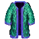
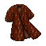
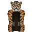
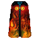
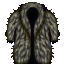
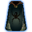
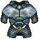

| Picture | Name | Description | What it does | Where it's from |
 |
Crystal fiber cloak | A small cloak made of tiny crystal fibers. | +2 | Sdc |
 |
Wolf fur | The crystal fibered fur of a hauntingly emaciated wolf | None | Part of a quest in Sdc Tan a Direwolf |
 |
Panther fur | The patchy crystal fur of a hauntingly twisted panther | None | Part of a quest in Sdc Tan a Mistpanther |
 |
Rabid deer fur | The crystal fibered fur of a rabid deer | None | Part of a quest in Sdc Tan a Rabiddeer |
 |
Gore bear fur | - | None | Part of a quest in Sdc Tan a Gorebear |
 |
Spider robe | The ghostly thin crystalline threads of a death wisp. (Does not actually glow) |
None | Can no longer be obtained |
 |
Wool cloak | A small wool cloak | None | Crits in Sdc |
 |
Rakshasa cloak | A fur cloak made from the silver and gold skin of a large rakshasa | None | Crits in Scd |
 |
Spur Robe | A cloak formed of an intricate web of highly conductive silver dragon scales and natural akronium (Level 82 req) |
+5 Offense +5 Defense +2 Strength +2 Agility +2 Wisdom +2 Intelligence Base AC value of 100 1600 lightning prot |
Kill and tan Spur located in the lava city area of Sdc3 |